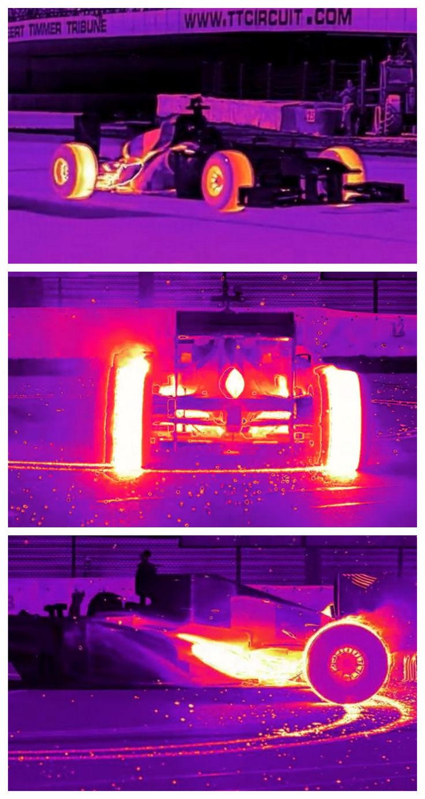
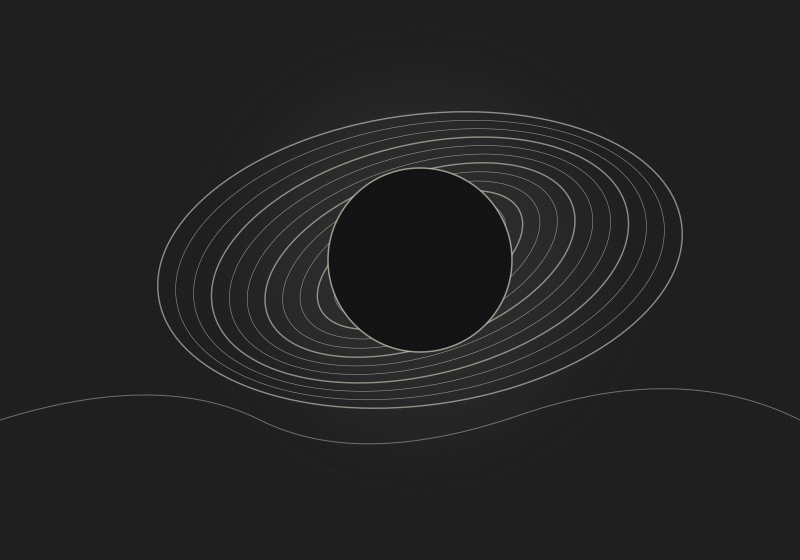

A / 01ARTIST NOTES
Бруно
Звучание, тексты и композиции для первого знакомства. Что замечаешь сразу, а что раскрывается после нескольких прослушиваний.
Читать заметку ↗
FIG. 001 / SOUND IN MOTION
43° 14′ N
76° 57′ E
НЕЗАВИСИМЫЙ МУЗЫКАЛЬНЫЙ ЖУРНАЛ
Исследуем артистов, тексты и странные детали звучания. Не очередной рейтинг — пространство для музыки, которую хочется услышать ближе.
Иногда всё меняет одна строка, едва слышный инструмент или знакомый приём, собранный совершенно иначе. SIDE B — о том, что обнаруживается, когда слушаешь чуть внимательнее.
О концепции ↗ WAVE STUDY / 02:17
WAVE STUDY / 02:17[02] / FEATURED LISTENING
Звучание, тексты и композиции для первого знакомства. Что замечаешь сразу, а что раскрывается после нескольких прослушиваний.
Читать заметку ↗Атмосфера, текстуры и настроение, которое складывается из деталей, а не из одного очевидного эффекта.
Читать заметку ↗Треки с необычными инструментами, сильными строками и неожиданными решениями в аранжировке.
К подборке ↗Место для независимых зарубежных артистов, которых хочется открыть без спешки и заранее готового рейтинга.
Открыть раздел ↗Визуалы карточек — оригинальная абстрактная графика, а не фотографии исполнителей и не обложки альбомов.
[03] / SOUND IN CONTEXT
Музыка существует не в вакууме. Текст, место, время, личные ассоциации и почти незаметные детали влияют на то, что мы слышим.
Принципы журнала ↗
FIELD STUDY / 04[04] / LISTENING NOTES
[05] / OPEN CHANNEL
Предложи артиста, альбом или песню для следующего внимательного прослушивания.
Оставить музыкальную заметку ↗